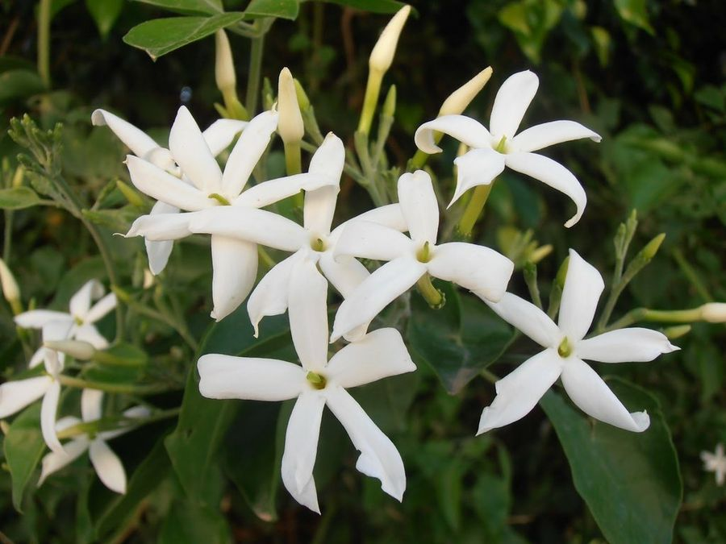

Jazmín (Jasminum spp.)
El jazmín es una planta trepadora o arbustiva conocida por sus flores blancas, pequeñas y muy fragantes.

Rosa (Rosa spp.)
Las rosas son arbustos conocidos por sus flores hermosas y fragantes, disponibles en una amplia gama de colores.

Helecho (Nephrolepis exaltata)
Los helechos son plantas con frondas largas y elegantes, ideales para dar un toque verde y fresco a los interiores.

Orquídea (Phalaenopsis spp.)
Las orquídeas son plantas epífitas conocidas por sus flores exóticas y duraderas, disponibles en diversos colores y formas.